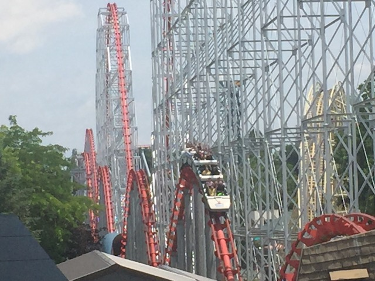
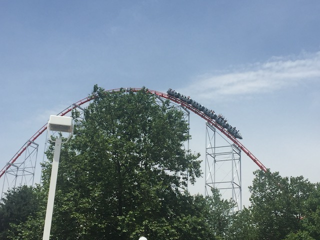
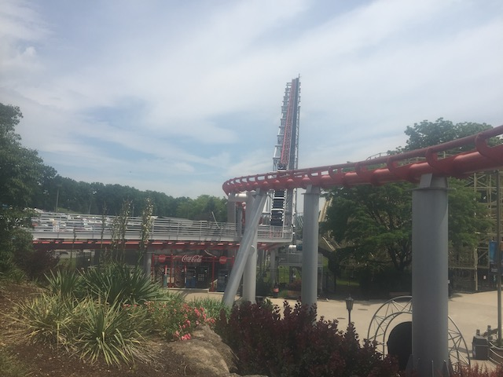
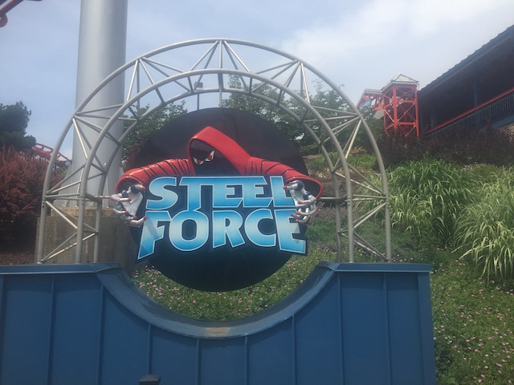
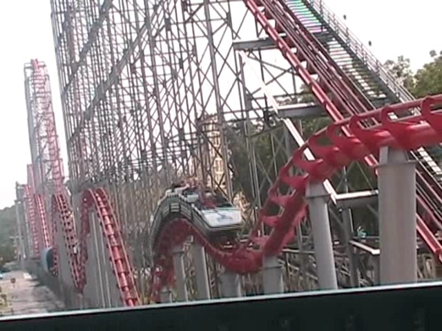
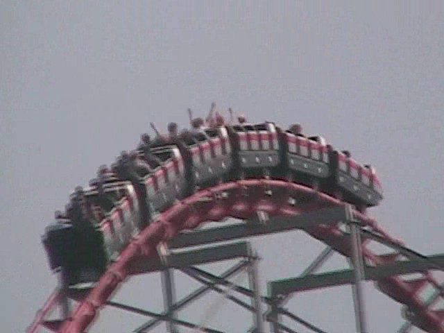
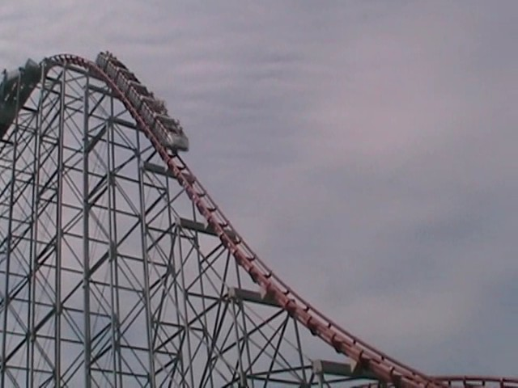
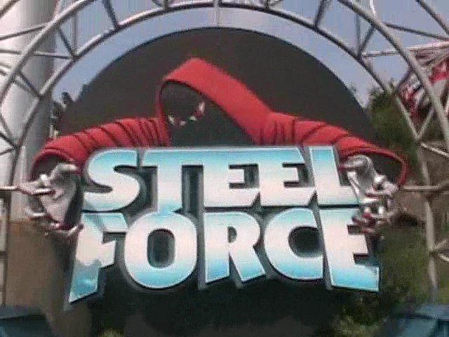

| |
Steel Force Review

Today at Incrediblecoasters, we're going to be reviewing Steel Force at Dorney Park. After getting in the cars and pulling down the lap bar, you go out of the station. You roll around a brief turn and head up the lifthill. About a minute later, we're still climbing the lifthill. Not much is going on. Just climbing this lifthill. To your right, you get a pretty good view of Dorney Park, and especially of Thunderhawk. To your left however, not much of a view. However, that really doesn't matter, as by this point, we've finally reached the top of the lifthill. At this point, everything at Dorney Park looks really tiny as you dominate above everything else, just wanting to drop already. We fall down the first drop. We gain quite a lot of speed before we get swallowed whole by the tunnel at the bottom of the drop. We then fly out of the tunnel and shoot up into the sky, burning off all that speed. We're now back up in the sky, still towering above Dorney Park (Hell, Hydra just looks a thin green twisted moldy noodle from up here). There is some mild airtime at the top of this hill. A little bit of a floating sensation, but really. This is nothing to write home about. Anyways, we then drop back down, still carrying our speed with us. After that fun drop, we then rise up another hill, again just mild floater air here. However, at this point, it just starts to gradually turn before heading downwards in a helix. While we're still going pretty fast here, there arnen't many laterals in this helix. At this point, it's almost like we're standing still, there's a giant fan blowing in our faces, and the atmosphere is slowly turning. That's what this helix is basically like. Just keep turning. Just keep turning. Just keep turning turning turning, until we reach some straight track that we just shred through before turning left and heading up another hill. Good news. This hill has some pretty good floater air. YAY!!! =) The bad news however is that this is the mid course brakes and now we slow down. LAME!!! =( We then drop off the mid course brakes, and surprisingly, we gain back more of our speed than I'd expect. We then rise up into a bunny hop. It's not a fantastic ejector air bunny hop, but it does provide us with some decent floater air. So it's still fun. We then head into a tunnel identical to the one we went down on the first drop. This time since we aren't flying through it, we can really see the tunnel and what it's worth. Not much. But it actually does have nice floater air and is stronger than what'd you expect from a Morgan Hyper. And after that, it's a pretty typical and predictable ending. Bunny hop. Decent Floater Air. Whee! Bunny Hop. Decent Floater Air. Wee! Bunny Hop. Decent Floater Air. Another little bump up to give a surprising pop of ejector air. Wee! Turn. Some mild laterals. Brake run. Yeah. That's pretty much Steel Force. While it's far from a bad ride, it's just nothing special. Nothing more than your typical Morgan Hyper. It's fun and all. I do enjoy the speed and the floater air moments. For some reason, it's a lot better than its sister rides, Mamba and Wild Thing. But even so, none of them stand out in the world of hyper coasters. However, it is a fun ride. I'd definetly give it a ride when at Dorney Park.
8/10
Location: Dorney Park
Opened: 1997
Built by: Morgan
Last Ridden: June 19, 2021
Steel Force Photos









Home
|